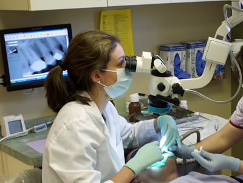

-
Hinsdale Office
- 630-655-3636
- 522 Chestnut St. Ste GA
Hinsdale, IL 60521
-
Wheaton Office
- 630-653-3636
- 200 E Willow Ave Ste 302
Wheaton, IL 60187
Our offices in Hinsdale and Wheaton provide a pleasant and welcoming atmosphere. They are equipped with the most modern technology in endodontics including the dental operating microscope, which offers increased magnification and illumination for all procedures. It is an adjunct to all phases of treatment including the localization and treatment of miniscule root canals, evaluating the presence and extent of a crack. Even the smallest detail is brought clearly into view.
Our practice utilizes state-of-the-art, cone bean computed tomography (CBCT). This technology is a great addition to the endodontic field since it provides highly accurate, 3-D radiographic images without superimposition of anatomical structures and free of distortion. It is utilized in the diagnosis, planning and treatment of endodontic disease. It allow us to see dental problems that conventional x-rays may not pick up using minimal radiation to the patient.
We also use digital radiography which significantly reduces radiation exposure to our patients and eliminates the hazardous biproducts of film developing. Our staff is highly trained, has access to state of the art sterilization equipment and follows strict infection control protocols.